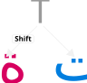
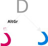
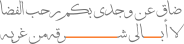
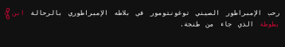
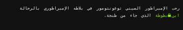
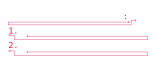
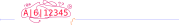
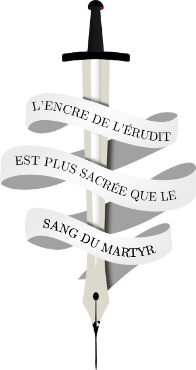

Cette façon est de loin la plus simple et la plus stable façon de procéder à l’installation de l’AZERTY arabe mais exige de disposer des privilèges de super-utilisateurs.
sudo cp -i /usr/share/X11/xkb/symbols/ar /usr/share/X11/xkb/symbols/ar.bak
sudo curl https://fauvenoir.github.io/azerty-arab/dist/azerty_arab.xkb_symbols >> /usr/share/X11/xkb/symbols/ar
Le fichier azerty_arab.xkb_symbols peut s’exécuter dans l’espace personnel de l’utilisateur. En revanche, la principale limitation est que la disposition n’apparaitra pas dans la liste des dispositions dans le panneau de configuration.
Pour se fait, téléchargez azerty_arab.xkb_symbols :
wget https://fauvenoir.github.io/azerty-arab/dist/azerty_arab.xkb_symbols
Sous X.org, vous pouvez alors activer l’AZERTY arabe grâce à :
xkbcomp -w10 azerty_arab.xkb_symbols $DISPLAY
Et revenir en suite à votre AZERTY latin grâce :
setxkbmap fr
Sous Wayland, la chose dépend de votre composeur. Avec Sway, il vous faudra adapter votre section des claviers comme suit:
input type:keyboard {
xkb_file /path/to/layout.xkb_keymap
}
Téléchargez le fichier azerty_arab-user.exe. Cet exécutable portable peut être lancé en tant que simple utilisateur.
azerty_arab.keylayout soit :
~/Library/Keyboard Layouts pour l’utilisateur actuel seulement ;~/Library/Keyboard Layouts pour tous les utilisateurs ;L’AZERTY arabe apparait alors dans la configuration « Langue et écriture » à l’onglet « Méthodes de saisie ».
La disposition du clavier AZERTY Arabe s’adresse à tous ceux qui ont l’habitude de saisir en AZERTY pour leurs textes en alphabet latin. En fait, combien de fois a-t-il été ennuyeux d’appuyer sur la touche A et de ne pas obtenir le أ alif tant attendu ? Vous êtes vous déjà agacé en vous disant : « Si seulement il existait un clavier où chaque lettre arabe serait sur la même touche que son équivalent phonétique latin » ? Eh bien, l’AZERTY arabe est ce clavier-là.
L’AZERTY arabe est une disposition de clavier pour saisir l’abjad arabe basée sur le principe de superposition phonétique. C’est-à-dire que les lettres arabes sont disposées de manière à ce que chaque lettre se retrouve sur la touche qui, dans la disposition originale du clavier AZERTY, contient la lettre latine qui en est la plus proche phonétiquement. De sorte à ce qu’une personne habituée à l’AZERTY original puisse retrouver intuitivement les lettres arabes avec le moins d’effort possible.
Par exemple, la lettre ا alif est sur la même touche que A, ب ba’ est sur la même touche que B, ك kaf est sur la même touche que K, etc.

Quelques lettres arabes peuvent exister sous deux formes, comme le tā’ qui peut s’écrire sous sa forme tā’ ouvert ت et tā’ bouclé ة. Et quoiqu’il s’agisse de la même lettre ayant une valeur sémantique équivalente du point de vue de la langue, l’utilisateur doit être capable de choisir quelle forme saisir. Dans ce cas, la forme considérée comme principale ou à tout le moins la plus courante est disponible en accès directe quand la forme plus secondaire est accessible en Shift.

En revanche, dans les cas où existent une concurrence entre deux lettres arabes considérées comme orthographiquement et sémantiquement différentes à occuper une même touche, soit parce que leurs sons sont également proches d’une même lettre latine (comme د dal et ذ dhal), soit parce que leur graphie est proche (comme ط ṭāʾ et ظ ẓā), dans ce cas la lettre considérée comme la plus proche intuitivement de la lettre latine est en accès directe, quand la seconde reste disponible AltGr.
Il a été procédé autant que faire ce peu à une superposition sémantique la plus mnémotechnique possible. Toutefois, il a bien fallut concilier cette exigences avec certaines contraintes de disponibilités. C’est pourquoi le cas de certaines lettres nécessitent quelques explications aux utilisateurs :
Alors que les chiffres arabes restent directement accessibles dans leur graphie dite ghubar en usage au Maghréb (0123456789), leurs équivalents machréquins (0123456789) restent facilement accessibles en utilisant Altgr+Shift dans les cas où il y’en aurait besoin.
Les signes diacritiques de vocalisations ـَ ـِ ـُ fatĥa kasra ḋamma sont réunis sur des touches cote à cote de façon mnémotechnique et intuitive, tout en respectant autant que possible le principe de superposition phonétique régissant l’ensemble.
Aussi, les signes casuels (tanwin) ـً ـٍ ـٌ fatĥaẗān ḋammaẗan kasraẗan sont disponibles en Shift de leurs équivalents simples
Les lettres additionnelles de l’arabe پ pa’, ڤ va’, ڭ gaf servant à transcrire les sons de l’arabe contemporain, des dialectes arabes, des autres langues arabographiées que sont l’urdu, le pashto, ou le ouïghour sont également disponibles à l’endroit de leur équivalent latin sur l’AZERTY original, soit respectivement P، V، et G.

Le symbole « ـ » dit tatwil (également connu en persan come kashida) soit l’allongement des liaisons entre lettres permettant la justification, notamment dans la poésie comme dans جــــــــــــــــــــادك الغيث
est accessible en Shift+AltGr+Espace.
Vous êtes-vous déjà demandé « Pourquoi cette parenthèse fermante n’est-elle pas à côté de la parenthèse ouvrante » ? Eh bien, vous ne vous la poserez plus. Les symboles complémentaires tels que ()[]{}«» se situent tous côte à côte de façon intuitive et mnémotechnique.
Les symboles utilisés dans l’écriture et l’édition arabes sont disponibles, en plus des symboles contemporains comme les signes critiques ou ceux nécessaires à l’informatique.
Les variations historiques du Maghreb, quoiqu’encore utilisées dans quelques publications coraniques, que sont le fā’ au point souscrit ڢ et le le qāf au tréma suscrit ڧ sont accessibles en Shift de leurs équivalents communs.
Soit dans le détail :
أو بالتفصيل:
| ڢ (ف maghrébin) | Shift+ف |
| ڧ (ق maghrébin) | Shift+ق |
L’espace insécable est un signe typographique, et en l’occurrence une espace qui, placée entre deux mots, ou un mot et un signe typographique empêchent ces derniers d’être séparés lorsqu’ils se retrouvent en fin de ligne. Ce qui évite notamment aux signes comme :, ;, !, ou ? de se retrouver en début de lignes, orphelins des phrases qu’ils sont sensés ponctuer.
En langue arabe notamment, il peut présenter de nombreux avantages, notament compte aux syntagmes que l’orthographe impose d’écrire en deux mots mais qu’il sied relativement mal de retrouver en deux lignes. Comme par exemple « ابن بطّوطة » Ibn baṫṫūṫaẗ, « أبو هريرة » Abū hurayraẗ, ou encore pour les formules eulogiques comme « محمّد ﷺ » Muĥammad [ṡallā alllhu ȝalayhi wa-sallam] qui, justement peuvent se retrouver brisés entre deux lignes.

Dans ce cas là, l’espace insécable Shift+Espace, placée entre les deux mots ou symboles du syntagme permet avantageusement de toujours les maintenir cote à cote.
Ainsi, dans l’exemple précédent, écrire « ابن⍽بطّوطة » permet d’assurer qu’en toute situation le syntagme reste solidaire sur la même ligne. Où le symbole « ⍽ » ne fait que représenter, pour des raisons de clarté, l’espace insécable qui évidement est invisible et non-imprimable.

Voyez-vous ce cas là où le sens de l’écriture change sans que vous parveniez à comprendre ce qui se passe ni à remédier ? Que tantôt les chiffres vont de droite à gauche, ou même dans tous les sens, que les mots s’écrivent en sens inverse, parfois même les lettres ? Vous avez assurément déjà vécu pareille situation des plus frustrantes.
Eh bien, l’AZERTY arabe propose une solution à cela. Ou plus exactement la solution existait déjà et l’AZERTY arabe ne fait qu’y donner accès.
| Symbole | Formation de touche | Explications |
|---|---|---|
| LRI | Altgr+خ | Force le sens de gauche→droite |
| RLI | Altgr+م | Force le sens de droite→gauche |
| FSI | Altgr+ل | Sens déduit automatiquement |
| PDI | Altgr+ك | Fin du bloc d’orientation forcée |
D’autre part, supposons que vous souhaitiez écrire un texte tout en arabe, donc totalement de droite à gauche, ressemblant à ceci :

Vous obtiendrez probablement un résultat sens dessus dessous comme celui-ci :

Ce qu’il vous faut alors c’est d’indiquer que la phrase entière doit s’écrire de droite à gauche, quelques soient les interprétations de l’algorithme.
Or, grâce aux caractères de contrôle bidirectionnels RLI en saisissant Altgr+م (forcer l’écriture locale de droite à gauche) en début de phrase, vous indiquerez à l’algorithme que la phrase entière est à formater de droite à gauche.
Vous obtiendrez probablement un résultat sens dessus dessous comme celui-ci :

D’ailleurs, vous pouvez même voir à même le navigateur le résultat :
أرسل لي هاتين الوثيقتين: 1. رخصة القيادة الخاصة بك؛ 2. بطاقة الهوية الخاصة بك.
Notez que sur la citation ci-dessus, je n’ai pas réglé l’alignement vers la droite afin d’illustre qu’il ne s’agit pas d’une question d’alignement comme souvent cru. Le texte en arabe est bien aligné vers la gauche, et pourtant le sens des lettres et symboles est toujours dans le bon ordre.
D’autre part, supposons que vous souhaitiez écrire un texte ressemblant à ceci :
Vous obtiendrez probablement un résultat sens dessus dessous comme celui-ci :

Grâce aux caractères de contrôle bidirectionnels LRI en saisissant Altgr+خ (forcer l’écriture locale de gauche à droite) et PDI en saisissant Altgr+ك (fin de bloc d’effet et retour au sens d’écriture original de la phrase), vous pouvez encadrer le bloc contenant le motif 12345|A|6 afin de forcer ce motif-là à suivre le sens de gauche à droite.
D’ailleurs, vous pouvez même voir à même le navigateur le résultat « رقم لوحة الترخيص هو 12345|A|6 أضن ».

{kind=link}